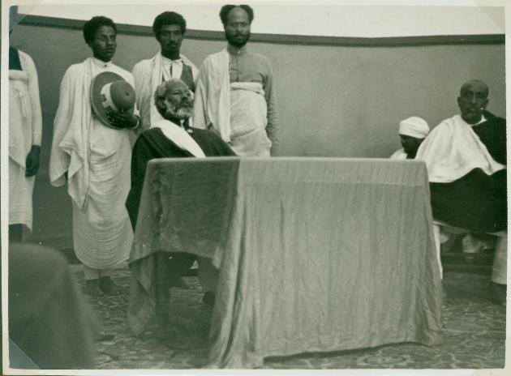
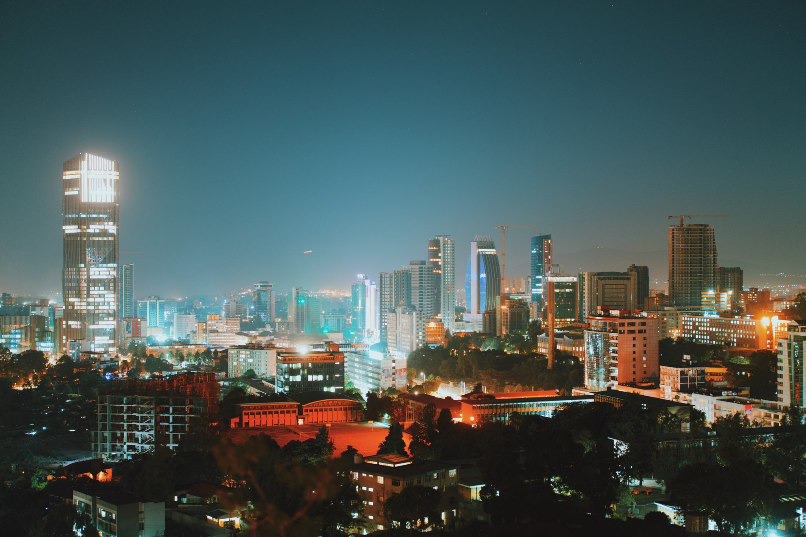

Addis Ababa was the last imperial capital of Ethiopia and serves as the capital of the modern state of Ethiopia plus, the political capital of Africa. Addis Ababa came into existence in 1886 as a mineral springs resort for Ethiopia's royal family and nobility. In 1892, Emperor Menilek II (r. 1889-1913) made it the capital when he constructed his palace there and his wife Empress Taytu Betul named the city Addis Ababa meaning "New Flower". By 1896, members of the nobility began to build permanent homes in the new capital. Neighborhoods bearing the names of these nobles provided housing for their followers along with districts for the imperial employees. Foreigners, artisans, and merchants also flocked to the city. The city’s previously uncertain future was established in 1907 with the granting of land charters and, in 1917 when the railroad arrived from Djibouti.
Early Days:
In its first years the city was more like a military encampment than a town. The central focus was the emperor's palace, which was surrounded by the
dwellings of his troops and of his innumerable retainers. As the population increased, firewood became scarce. In 1905 a large number of eucalyptus trees
were imported from Australia; the trees spread and provided a forest cover for the city.

Emperor Haile Selassie:
By 1917, Ras Tafari Makonnen, later Haile Selassie (r. 1930-74), had become one of the most powerful people in Addis Ababa. He recognized
the future importance of the city and redistributed much of his recently acquired wealth to gain the support of the emerging class of urban
Ethiopians. In 1918, a series of popular demonstrations in Addis Ababa catapulted Tafari to the head of a regency council.
Economic Boom:
Addis Ababa experienced an economic boom between 1926 and 1927, fueled by the lucrative processing of coffee and hides just before export.
Aided by this new wealth, the bourgeoisie of the city began to construct new, stone houses filled with imported European furniture and the
richest amongst them drove automobiles. At this time, a rudimentary banking system began to develop in the city.
During the next twenty years, Addis Ababa continued to modernize and attract foreign investors, traders, and Ethiopians from the countryside, and it was a center of higher education. However, the slow government response to a famine in 1973 led to first a series of student demonstrations in 1974 in Addis Ababa, and then to a successful coup d'état which disposed Selassie. The military regime, known as the Derg, fell in 1991. Addis Ababa continues to this day as Ethiopia's capital and first city, with a population of 3.3 million in 2008.
Addis Today
The bulk of the export and import trade of Ethiopia is channeled through Addis Ababa on its way to or from the ports of Djibouti, on the Gulf of Aden, or Asseb, Eritrea, on the Red Sea. The city is also the collection and distribution centre for much of the country's internal trade. The Mercato, located in the western part of the city, is one of the largest open-air markets in Africa. The Piazza in the central city and Bole Road to the southeast feature more-expensive European-style shopping centres.
Addis Ababa's manufactures include textiles, shoes, food, beverages, wood products, plastics, and chemical products. Most of Ethiopia's service industries are also located in the city. Banking and insurance services are concentrated in Addis Ababa, and the nation's major newspapers are published there.
Addis Ababa is the hub of the nation's transportation network. Several roads connect it to other major cities; the only railway runs to Djibouti. The city is also served by an international airport.
As the head quarter of the African Union (AU) and the UN Economic Commission for Africa (UN-ECA), Addis Ababa, the capital of Ethiopia, is emerging as an international center with diverse economic and cultural characteristics. The city has evolved from a relatively modest size where pack animals and pedestrians shared main highways with modern automobiles to a cosmopolitan center where freeways; high rise buildings for office, shopping, hotel and restaurants; condominiums and exclusive neighborhoods with gated communities have become a common scene.
